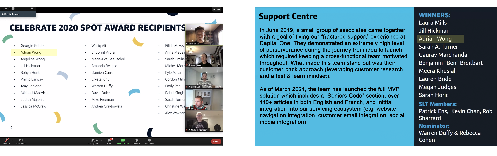
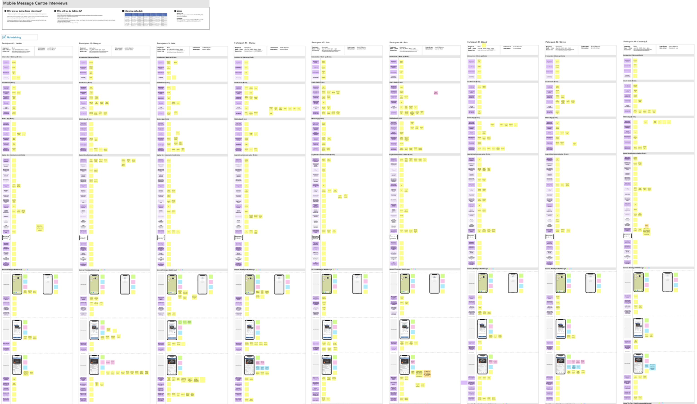
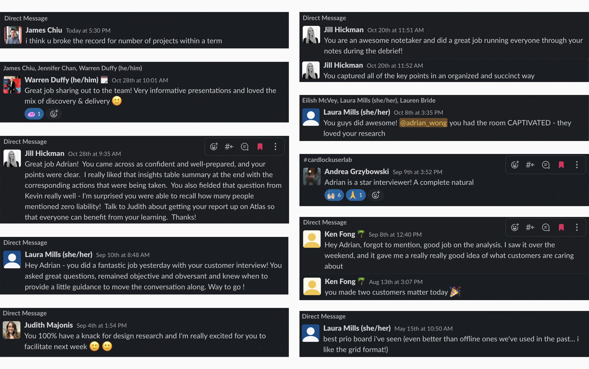
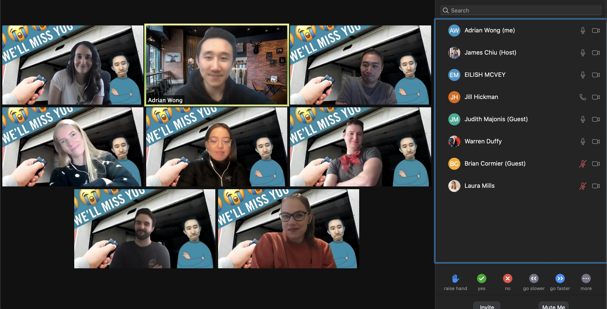

Capital One Internship
Helping customers succeed by bringing ingenuity, simplicity, and humanity to banking.

Overview
From May to December 2020, I had the opportunity to work as a design research and strategy intern at Capital One.
I was a contributing member for several large-scale projects (>1M users) and helped establish new remote research methods.
Challenge and Growth
Due to the pandemic, this was the first internship I completed entirely remotely. Especially since so much of my work was based on developing empathy, many activites such as interviews, discussions, meetings, and workshops became challenging. Imposter syndrome and general shyness were new difficulties that I quickly overcame through regular 1-on-1s and team socials. Over time, I grew confident in my work and proactively sought more opportunities to learn and grow, such as presenting findings to leadership and the executive team.
By the end of the internship, I was the recipient of a 2020 spot award - I was recognized after volunteering to help facilitate a design thinking workshop with organizations who partnered with Capital One during the 2020 Digital For Good Summit!
Project Briefs
As a design strategist at Capital One, I had the pleasure of working on several projects within multiple teams.
Some of these projects include:
- Identifying opportunities to promote digital engagement and reducing call-related expenses by ~$100k annually
- Motivating customers to pay their minimum balances at a time of financial hardship due to COVID
- Conducting research and advocating for inclusive design with regards to seniors' digital banking experience
- Facilitating design sprints to collaboratively ideate a card locking functionality within the mobile app
- Completing historical research audits and competitive analyses to revamp the design of a credit monitoring solution
- Planning discussion guides and moderating remote research for various usability and empathy interviews
Due to the nature of NDAs, I cannot disclose specifics about these projects within my portfolio. If you'd like to learn more about the work I did at Capital One, feel free to reach out to me at my LinkedIn or my email!
Verbatims
As I collaborated across multiple teams cross-functionally, I had the opportunity to make many lasting connections. My teammates encouraged me to step out of my comfort zone and be confident in the work that I presented. This involved providing honest criticisms and vocalizing their support, leaving me with the confidence to be resourceful in the face of ambiguity yet ask for guidance when needed. These were some of the things they had to say:
Reflection
Reflecting on my time at Capital One, I realize that this experience had a profound effect on my personal and professional growth. I had the opportunity to try new things, tackle complex problems, and learn from a team of talented professionals. I was constantly challenged with new and exciting tasks that solidified my passion for user advocacy and design. With the help of my mentor, I became much more confident in my work and learned to always critically examine not only if we were designing the right solutions, but if we were designing for the right problems. Despite the challenges of a work-from-home environment, the connections I made and the lessons I've learned made this experience unforgettable.
